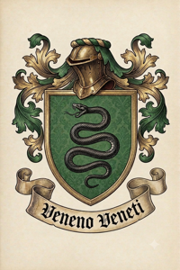

House of Bregovi
{kind=link}

The House of Bregovi (Dom Bregovi) descends from Boleslav and Lukas, rival contenders for the title of Prince Bishop of Bregovo in the late fifteenth and early sixteenth centuries; it was one of the most influential noble families in Former Upper Pannonia during the eighteenth and nineteenth centuries.
Early history
After the treason of Maczasz the Renegade in 1529, both pretenders to the Hungarian crown — Ferdinand I of Habsburg and János Zápolya — abolished the title of Prince Bishop and declared it permanently extinct. The sons of Lukas and the younger sons of Boleslav fought against the Ottomans in Habsburg or Zápolya service. Their noble status was recognized, but no princely title. Habsburg Emperor Maximilian II confirmed that no descendant of the "sinful and cursed breed of Bregovo" would ever hold the title of Prince, Duke, Count, or any equivalent dignity.
Through the sixteenth and seventeenth centuries, many Bregovis served Habsburg or Hungarian monarchs without distinction. The family's fortunes changed under Ferenc Bregovi, whose heroic fighting under Eugene of Savoy — including the Battle of Zenta — earned him Bregovo and numerous other properties in the recaptured territory. Emperor Leopold also established a majorat over the Pannonian Bregovi estate, preventing inheritance splits and enabling the family's growing wealth. From Ferenc onward, the house was headed by the Head of the House (Glova Doma), referred to below as HotH.
Heads of the House
Ferenc
Ferenc (German: Franz; 1662–1737, HotH 1698–1737) served under Eugene of Savoy in the Great Turkish War, commanding a cavalry regiment at the Battle of Zenta in 1697. For this service he was granted Bregovo and numerous other properties in the recaptured territory in 1698, making him the richest landowner in Upper Pannonia. He spent many years as Commander of the Upper Pannonian Military Frontier — the province's principal military and civilian governor. In this office he led the suppression of Rákóczi's rebels in the Pannonian theater and ended the Austro-Turkish War of 1716–1718 as a major general, having taken part in the capture of Belgrade. A fanatical Catholic, he fiercely persecuted Muslims and Protestants and oversaw mass executions of alleged witches, vampires, and werewolves.
From Ferenc's sons onward, the family followed a tradition of giving the eldest son two alliterative names — one German, the other Hungarian or Slavic.
Henrik Hunor
Henrik Hunor (German: Heinrich Hunor; 1692–1763, son of Ferenc, HotH 1737-1763) was commissioned as an ensign in the final campaigns of the War of the Spanish Succession and took part in the capture of Belgrade under his father in 1717. He led a regiment at the disastrous Battle of Grocka in 1739 during the Russo-Austrian-Turkish War. Through 1740s and 1750s, commanded the Upper Pannonian Frontier section like his father. He converted the former Ottoman Sancak Bey summer residence, the Yeşil Konak north of Vronovica, into a Baroque mansion called Grünhof. As a landlord, he reduced large numbers of his dependants to serfdom and confiscated lesser landowners' properties with impunity. He was also known for introducing jus primae noctis on some of his estates.
Konrad Kazimir
Konrad Kazimir (1720–1788, son of Henrik Hunor, HotH 1763-1788) was born with a twin brother whose existence complicated the majorat inheritance; the brother died in infancy, resolving the matter. Konrad Kazimir fought as a colonel during the Seven Years' War at Leuthen in 1757 and at Hochkirch in 1758. Through systematic over-exploitation of his serfs he accumulated great wealth and rebuilt Grünhof as a lavish Rococo complex. A patron of the arts, he founded the first private theatre in Upper Pannonia, staffed with serf actors. Owing to persistent complaints about Henrik's abuses, the Habsburgs never again appointed a Bregovi as commander of the Upper Pannonian Frontier section; Konrad Kazimir thus held no administrative office, though his wealth and connections kept him highly influential.
Lipot Lotar
Lipot Lotar (German: Leopold Lothar; 1752–1819, son of Konrad Kazimir, HotH 1788-1819) took part in the suppression of the Transylvanian peasant uprising of 1784, becoming notorious for the atrocities committed in that campaign. Known as a liberal, a freethinker, and a libertine, he maintained a harem of young serf women despite the formal abolition of serfdom in 1785; in practice, debt bondage continued throughout the period. Criticized by the Church for systematic caning of village priests, he sought to make amends through a material donation and built the new Bishop's Palace in Vronovica; he then commissioned erotic paintings for the Bishop's inner rooms, treating it as a private joke.
Gergej Gabriel
Gergej Gabriel (1782–1845, son of Lipot Lotar, HotH 1819-1845) served in the Napoleonic Wars as a hussar officer: captured at Austerlitz in 1805 and released on parole, he fought at Wagram in 1809 and at Leipzig in 1813, ending the wars as a major. Immediately after his father's death, Gergej Gabriel dissolved the harem and abolished the serfdom ultimately. In 1820, he petitioned for the restoration of the princely title, a request Emperor Franz rejected. A nonconformist of mystical inclinations, a Freemason and Rosicrucian, he assembled a collection of magical and alchemical manuscripts and practiced ceremonial magic, with a particular obsession with summoning succubi. He sponsored the first scholarly exploration of the Klykov monastery library by Enjo Zslutovodyj, and partly reconstructed Bregovo Castle in neo-Gothic style, making it the family's principal residence.
Lajosz Leonard
Lajosz Leonard (German: Ludwig Leonhard; 1810–1868, son of Joszef, HotH 1849-1868) participated in the suppression of the Kraków Uprising of 1846 and in the Italian campaigns of 1848–49, fighting at Custoza in July 1848 and at Novara in March 1849. Promoted to major general thereafter and appointed Ban of Upper Pannonia in 1850, he patronized the early Slavic Revival and petitioned again — without success — for the restoration of the princely title. In 1862 he was dismissed from the Banship for his suspected pro-Slavic and anti-Hungarian stance. In 1868, as a member of the Upper Pannonian Diet (Subor), he opposed the terms of the Hungarian-Pannonian agreement and died suddenly at fifty-eight in the course of these disputes.
Adalfrid Attila
Adalfrid Attila (1837–1904, son of Lajosz Leonard, HotH 1868-1904) served in the Austro-Prussian War as a cavalry officer, surviving the rout at Königgrätz in 1866, before turning to travel and collection. His expeditions took him to Malay Archipelago, New Guinea, Africa, and the Near East. One of the few Europeans, he visited Mecca disguised as a Muslim pilgrim, the city being forbidden to non-Muslims on pain of death. Desperate to acquire an Austrian title, he travelled to the Empire of Brazil in 1871 and legally purchased the title of Count of Pindamonhangaba. Franz Joseph responded by explicitly forbidding "Adalfrid Attila Bregovi, Count of Pindamonhangaba" from styling himself "Count Bregovi." Adalfrid Attila took this as a personal insult and became an increasingly active supporter of the Slavic movement, including its political wing.
Otto Ostrovit
Otto Ostrovit (1872–1946, son of Adalfrid Attila, HotH 1904-1946) was a politically active member of Subor, promoting Upper Pannonian autonomy. During the First Republic he was a non-partisan politician who served as Minister of War in several 1920s cabinets. He endorsed the coup of Drogan Glovacz in 1931 but withdrew from politics thereafter. In 1934, soon after proclaiming the monarchy, King Drogan I granted the Bregovi family the long-desired princely title. Otto Ostrovit survived the 1944 battle of Bregovo castle and died in emigration.
Svjetovit
Svjetovit (1899–1973, son of Otto Ostrovit, HotH 1946–1973) was given the full double name Sigfrid Svjetovit (German: Siegfried Swietowit) in keeping with family tradition, but never used it; with him, the tradition was abolished. He studied sculpture in Paris, survived the 1944 battle of the castle and emigrated with the rest of the family. In 1946 he petitioned Gowbka for permission to return, abdicating his princely title and donating all family property to the state — property that had already been nationalized; the permission was granted. Svjetovit returned to become a devoted Gowbka supporter and the most celebrated official sculptor of the People's Republic, serving as lifelong chairman of the PRUP Academy of Fine Arts. He authored Gowbka's equestrian monument and the entire sculptural program of the Alley of Heroes and Pannonian Women's Street (see Sixth District of Vronovica). He donated most of his royalties to Miljana Gowbka's orphanages.
Blazsen
Blazsen (1929–2007, son of Svjetovit, HotH 1973-2007) was an artist whose work, unlike his father's, was avant-garde and nonconformist, at odds with the Socialist Realist canons of the People's Republic. He was never persecuted, but his dissident reputation made him popular and sought-after in the West. His works, including the famous "The Middle Finger" series, entered the collections of the Museum of Modern Art in New York and the Centre Pompidou in Paris. After 1990 Blazsen emigrated to Vienna, where he was awarded the Austrian Grand State Prize in 1998 and lived as a prosperous artist with no involvement in politics.
Michael
Michael (born 1960, son of Blaszen, HotH since 2007), living in Vienna, is the current head of the House of Bregovi. He serves as an external consultant to the UN Quadrilateral Commission on Former Upper Pannonia, a Vienna-based body that appoints the UN High Commissioner.
Other notable men
Younger sons of the Bregovis, excluded from the majorat inheritance, typically served as military officers or civilian administrators, and occasionally as priests; from the late nineteenth century, some entered private enterprise.
Karol the Cyclops (1696–1773, brother of HotH Henrik Hunor) took part in the capture of Belgrade in 1717 alongside his elder brother, losing an eye in the battle. He fought in the Russo-Austrian-Turkish War of 1737–1739, commanded a brigade at Dettingen in 1743 during the War of the Austrian Succession, and ended his three-war career as a major general. Known as "the Pannonian Bluebeard," he had six consecutive wives, all of whom died prematurely within a few years of marriage.
Ferenc the Corsair (1726–1761, brother of HotH Konrad Kazimir) began his career in the navy during the War of the Austrian Succession; he later turned privateer, operating against Turkish pirates in the Adriatic and raiding Turkish merchant vessels in the Mediterranean. He was captured by Turks and hanged on Crete.
Djordji (1756–1796, brother of HotH Lipot Lotar) commanded an infantry regiment at the siege of Belgrade in 1789 during the Austro-Turkish War, then led it into the Italian theater in 1796 during the War of the First Coalition, rising to major general before being killed in action during the French siege of Mantua.
Gellert the Pious (1785–1862, brother of HotH Gergej Gabriel) was officially recognized as the son of Lipot Lotar, but was widely believed to be the son of his wife Angela (see below) and her younger brother Benedict Mrezsevi, whom Angela had molested at age fourteen. Everything known about Lipot suggests he would have found the arrangement charming. Gellert became a cleric and later served as Bishop of Vronovica from 1848 — the only Bregovi appointed to this position since Maczasz the Renegade. He ordered the overpainting of the frivolous paintings his official father Lipot had commissioned for the Bishop's Palace, and excommunicated his brother Gergej Gabriel for mystical and occult practices. Beatified in 1938.
Lukas (1846–1916, brother of HotH Adalfrid Attila) was politically active as a member of Subor. Unlike Adalfrid Attila and Otto Ostrovit, he took a conservative and pro-Hungarian stance, strongly opposing the Slavic movement.
Bela the Madjaron (1875–1944, son of Lukas) commanded a Honvéd infantry regiment on the Galician front in 1914–15 and on the Isonzo front until 1917, then served in the Pannonian National Army from 1919. During the 1940 invasion he headed the General Staff Intelligence Directorate and contributed significantly to Hungarian success by relaying false information to King Drogan. After the annexation he received the Hungarian Order of Merit and retired. He was executed by Communists in 1944.
Notable women
Magdalena (1690–1767, daughter of Ferenc) was abbess of Rabenburg Carmelite Convent, known for an outbreak of demonic possession in the 1730s. In 1739, an Italian exorcist suppressed it, not by divine force but by a deal with the devil, as an episcopal inspection of 1748 revealed. The devil agreed to leave the possessed nuns in exchange for regular black mass rites, which Magdalena thereafter conducted with most of her community. After the discovery, Magdalena was placed in lifelong solitary confinement, several of her accomplices were burned, and the convent was razed to the ground.
Angela (1765–1801, born Mrezsevi) came from a noble family known for its piety. Raised in a convent, she had never seen a man other than her father and priests before her marriage to Lipot Lotar Bregovi in 1780. Under Lipot's influence she followed him into debauchery, took multiple lovers with the husband's consent, and participated in his orgies. Later historians nicknamed her the "Pannonian Messalina," though some argue the accounts are exaggerated.
Dorocza (1795–1866, born Tepeljej) came from a family of minor gentry dependent on the Bregovis. Lipot Lotar's reputation was such that no family of equal standing would give their daughters in marriage to his son. Dorocza was married to Gergej Gabriel in 1808 and made multiple escape attempts thereafter, each time returned by force of law. From around 1815 she became mentally unstable — or claimed to be — and spent the rest of her life in domestic confinement.
Ilona (1830–1888), daughter of Lajosz Leonard, was a disciple of Enjo Zslutovodyj and is known chiefly as the addressee of his love lyrics. In 1847 she was given in an arranged marriage to a Hungarian magnate of the Esterházy family. She never learned of Enjo's feelings until the posthumous publication of his poetry in 1853.
Magrita Bregovska (1842–1891), an illegitimate daughter of Lajosz Leonard Bregovi and his chambermaid, married Gostyvoj Bluxa in 1860. Mother of six children who became significant figures in Pannonian culture and politics, including Zdjeslav and Kvjetana.
Eva (1840–1912, born Fekete), from a noble Hungarian family, married Adalfrid Attila Bregovi in 1856. During his travels — that is, most of his life — she managed the Bregovi estates with high efficiency, significantly increasing the family's wealth. A domestic tyrant, she directed the life of her son Otto Ostrovit entirely, including his choice of wife and political career, and even spanked him well into his adulthood.
Marta (1877–1946, born Fekete), a niece of Eva, was chosen by Eva as a wife for her son Otto Ostrovit. She was equally tyrannical and, after Eva's death, commanded her husband in the same manner, spanking included, for the rest of his life. Her son Svjetovit left home at the first opportunity and moved to Paris to study art.
Coat of arms
The Bregovis' coat of arms, officially approved by Emperor Leopold in 1700, depicts a coiled black viper on a green background, mouth agape. The design derives from a family legend: at the Battle of Mohács, an Ottoman approached Mixal Bregovi, son of Boleslav and ancestor of Ferenc, and nearly killed him with a sabre, but a viper bit the Ottoman's horse, unhorsing him and saving Mixal's life. The Bregovis privately added a double princely and episcopal crown to the shield — illegal and never displayed publicly.
The family motto, VENENO VENETI, is of obscure origin and meaning. Literally, the Latin reads "for venom, Venetians," which makes no clear sense. It is generally understood as a corruption of veneno venite, "come for venom," or veneno venerati, "honoured by venom."